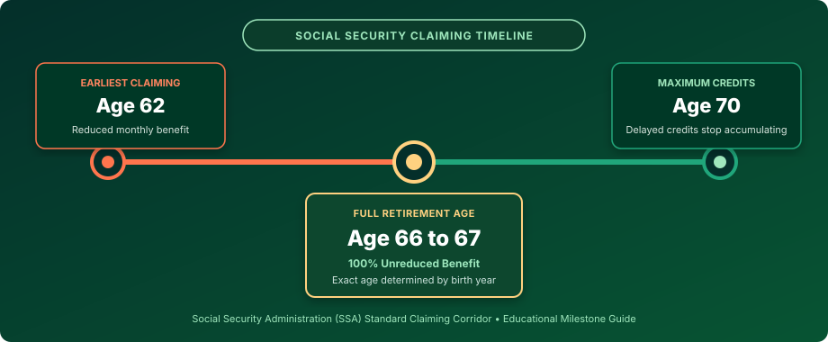
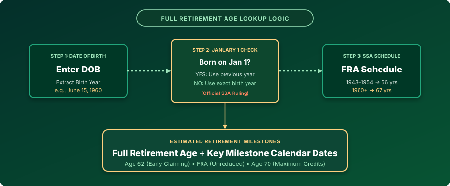

1. What Is Full Retirement Age (FRA)?
Full Retirement Age, universally abbreviated as FRA (and historically termed "normal retirement age"), is the specific age established by the Social Security Administration (SSA) at which a worker becomes legally entitled to collect 100% of their calculated retirement benefit, known as the Primary Insurance Amount (PIA).
Under the original 1935 Social Security Act, Full Retirement Age was fixed at age 65 for all workers. However, as American life expectancy increased and demographic pressures grew, Congress enacted the 1983 Social Security Amendments, which introduced a phased, statutory schedule gradually increasing the Full Retirement Age from 65 to 67 based on the worker's year of birth.
Full Retirement Age Does NOT Mean Mandatory Retirement
A common misconception is that reaching Full Retirement Age requires you to stop working. In reality, Full Retirement Age is purely a financial milestone for Social Security benefit computation. You can continue working full-time at, before, or well past your FRA without any reduction in benefits once you reach FRA, as the Social Security Retirement Earnings Test ceases to apply entirely once you reach your FRA month.
2. Official Social Security Retirement Age Chart by Birth Year
The following schedule represents the authoritative Social Security Administration Full Retirement Age timetable as established under federal law:
| Year of Birth | Full Retirement Age (FRA) | Reduction at Age 62 | Delayed Bonus at Age 70 |
|---|---|---|---|
| 1937 or earlier | 65 Years | 20.00% | Varies by law |
| 1938 | 65 Years + 2 Months | 20.83% | +31.00% |
| 1939 | 65 Years + 4 Months | 21.67% | +29.67% |
| 1940 | 65 Years + 6 Months | 22.50% | +28.33% |
| 1941 | 65 Years + 8 Months | 23.33% | +27.00% |
| 1942 | 65 Years + 10 Months | 24.17% | +25.67% |
| 1943–1954 | 66 Years | 25.00% | +32.00% |
| 1955 | 66 Years + 2 Months | 25.83% | +30.67% |
| 1956 | 66 Years + 4 Months | 26.67% | +29.33% |
| 1957 | 66 Years + 6 Months | 27.50% | +28.00% |
| 1958 | 66 Years + 8 Months | 28.33% | +26.67% |
| 1959 | 66 Years + 10 Months | 29.17% | +25.33% |
| 1960 and later | 67 Years | 30.00% | +24.00% |
Special Legal Rule: The January 1 Birth Date Exception
Under official Social Security Administration rules (POMS GN 00302.010), an individual attains an age on the day prior to their birthday. Therefore, if you were born on January 1, Social Security legally treats you as attaining your age on December 31 of the previous year. Consequently, your Full Retirement Age is determined using the previous birth year. For example, a person born on January 1, 1960 uses the 1959 schedule (FRA = 66 years, 10 months), rather than the 1960 schedule (67 years).
3. Social Security Calculator by Age (Ages 62 through 70)
Workers have substantial flexibility in selecting when to initiate their Social Security retirement benefits across an eight-year claiming window. Below is a breakdown of what each claiming age represents from an administrative and financial perspective:
| Claiming Age | Administrative Classification | Strategic & Financial Implication |
|---|---|---|
| Age 62 | Earliest General Claiming Age | Benefits permanently reduced by 25% to 30% depending on birth year. Earnings test limits apply if continuing to work. |
| Age 63 | Early Claiming Corridor | Substantial reduction continues; earnings test applies. |
| Age 64 | Early Claiming Corridor | Moderate reduction; earnings test applies. |
| Age 65 | Medicare Eligibility Milestone | Historically FRA; now an early claiming year with a partial reduction. Crucially, Medicare enrollment begins here regardless of FRA. |
| Age 66 | Full Retirement Age for 1943–1954 | Full unreduced benefits for older baby boomers; near-full benefits for later birth cohorts. |
| Age 67 | Full Retirement Age for 1960+ | 100% unreduced Primary Insurance Amount for all workers born 1960 or later. Earnings test completely eliminated. |
| Age 68 | Delayed Claiming Phase | Earns 8% per year in Delayed Retirement Credits (DRCs) above unreduced FRA. |
| Age 69 | Delayed Claiming Phase | Accumulates an additional 8% annual boost in monthly benefit payout. |
| Age 70 | Maximum Benefit Milestone | Delayed Retirement Credits stop accumulating. Benefit payout reaches its maximum possible permanent monthly amount. |
4. Age 62 vs. Full Retirement Age vs. Age 70
Visualizing the three core pillars of the Social Security retirement corridor clarifies the trade-offs between lifetime duration and monthly payout checks:

- Claiming at Age 62: You receive smaller monthly checks over a longer expected period. If you need immediate cash flow, have health concerns, or have stopped working, claiming at 62 provides immediate liquidity, but locks in a permanent 25%–30% discount.
- Claiming at Full Retirement Age (66–67): You receive 100% of your earned benefit. You can continue earning any amount of wage income without having any benefits withheld under the retirement earnings test.
- Claiming at Age 70: For every year you delay beyond your FRA up until age 70, your monthly benefit permanently increases by 8% per year (or roughly 0.67% per month). For someone with an FRA of 67, claiming at age 70 results in a check that is 24% higher every single month for the rest of their life, plus cost-of-living adjustments (COLA).
5. Social Security Benefits by Age: What This Calculator Does (and Does NOT)
Because search queries frequently ask for a "Social Security benefits calculator by age" or an "average Social Security check calculator," it is vital to establish what an age calculator can and cannot do:
What This Calculator Accurately Determines:
- Your official Full Retirement Age in whole years and months.
- The exact calendar date and month when you attain FRA.
- Your early claiming milestone date (Age 62).
- Your maximum delayed credit milestone date (Age 70).
- Application of the legal January 1 birthday adjustment.
What This Calculator Does NOT Calculate:
- Personalized Benefit Amounts: Your actual dollar benefit is determined by your 35 highest-earning years, wage indexing, and inflation adjustments—data that only the SSA maintains.
- Tax Withholding: Taxes on Social Security depend on your total combined provisional income.
- Spousal or Survivor Benefits: Spousal claiming rules depend on your partner's work record and FRA.
- Medicare Part B Deductions: Premiums are deducted directly from your gross check based on income tiers (IRMAA).
To obtain your official personalized benefit dollar estimate based on your authentic tax and earnings history, visit SSA.gov / my Social Security.
6. Social Security FRA vs. Medicare Eligibility
One of the most frequent retirement planning errors in the United States is confusing Social Security Full Retirement Age with Medicare eligibility.
Prior to the 1983 Social Security amendments, both Full Retirement Age and Medicare eligibility were aligned at age 65. When Congress raised the Social Security FRA to 67, they did not change Medicare eligibility. Medicare eligibility remains fixed at age 65 for virtually all U.S. citizens and legal permanent residents.
If you delay claiming Social Security until your FRA at age 66 or 67, you must still actively enroll in Medicare Part A and Part B during your Initial Enrollment Period around your 65th birthday (unless you have qualifying creditable coverage through active current employer group health insurance). Failing to enroll can trigger permanent lifetime late-enrollment penalties.
7. Social Security Retirement Age in 2026
What is the current operational status of the Social Security retirement age schedule in 2026?
- Workers turning 62 in 2026: Born in 1964. Their Full Retirement Age is 67 years. Reaching age 62 in 2026 means they can claim an early benefit, but it will be reduced by 30%.
- Workers reaching FRA in 2026: Workers born in 1959 reach their FRA (66 years and 10 months) during 2026. Workers born in 1960 reach their FRA (67 years) during 2027.
- Workers turning 70 in 2026: Born in 1956. Their delayed retirement credits have fully maximized, and they should initiate their claims without further delay.
8. Calculation Methodology & Logic Flow
Our Social Security Age Calculator executes a deterministic client-side calculation using the statutory rules established by Title II of the Social Security Act:

- Date Ingestion: The user provides their complete date of birth (Month, Day, Year).
- January 1 Attainment Check: If the birth date is January 1, the effective birth year is decremented by 1 (
Effective Year = Year − 1) per SSA POMS GN 00302.010. - Schedule Lookup: The effective birth year is mapped against the statutory 1937–1960+ schedule to extract FRA in whole years and bonus months.
- Calendar Arithmetic: The algorithm projects forward from the birth date by exactly 62 years (Early Claiming), FRA years + months (Unreduced Claiming), and 70 years (Maximum Delayed Credits).
9. Worked Examples
Example 1: Standard Mid-Year Birth (June 15, 1960)
- Birth Date: June 15, 1960
- January 1 Check: False (Use 1960)
- Full Retirement Age: 67 Years, 0 Months
- Age 62 Milestone: June 15, 2022 (Earliest claiming; 30% reduction)
- FRA Milestone: June 15, 2027 (100% unreduced benefit)
- Age 70 Milestone: June 15, 2030 (124% maximum benefit payout)
Example 2: January 1 Boundary Birth (January 1, 1960)
- Birth Date: January 1, 1960
- January 1 Check: True (Attains age Dec 31; effective year = 1959)
- Full Retirement Age: 66 Years, 10 Months (1959 statutory rule)
- Age 62 Milestone: January 1, 2022
- FRA Milestone: November 1, 2026 (Reaches FRA two months earlier than peers born later in 1960!)
- Age 70 Milestone: January 1, 2030
Frequently Asked Questions
What is the Social Security full retirement age?
Full Retirement Age (FRA) is the age established by federal law at which you are entitled to 100% of your primary insurance amount without any early-claiming reduction. It ranges from age 65 to 67 depending on birth year.
What is my Social Security retirement age?
Your Full Retirement Age depends primarily on your birth year. For everyone born in 1960 or later, FRA is 67. For those born between 1943 and 1954, FRA is 66. For birth years between 1955 and 1959, FRA increases in two-month increments.
Can I collect Social Security at 62?
Yes. Age 62 is the earliest general age to claim Social Security retirement benefits. However, claiming at 62 permanently reduces your monthly check by 25% to 30% compared to waiting for your Full Retirement Age.
Is Social Security retirement age 65 or 67?
Under current law, Social Security Full Retirement Age is 67 for all workers born in 1960 or later. Age 65 was the FRA for workers born in 1937 or earlier, but today age 65 is primarily the milestone for Medicare enrollment.
What is full retirement age for someone born in 1960?
For individuals born in 1960 or later, the current Social Security Full Retirement Age is exactly 67 years old.
What is full retirement age for someone born in 1959?
Under the official statutory schedule, Full Retirement Age for someone born in 1959 is 66 years and 10 months.
Can I receive Social Security after age 70?
You can apply for Social Security after age 70, but Delayed Retirement Credits cease accumulating once you reach age 70. There is no financial benefit to delaying your claim past age 70.
Does Full Retirement Age mean I have to retire?
No. Full Retirement Age is a benefit milestone, not a mandatory retirement requirement. You can continue working full-time with zero benefit reduction once you reach your FRA.
Is Social Security FRA the same as Medicare age?
No. Medicare eligibility generally begins at age 65 regardless of birth year, whereas Social Security Full Retirement Age is 66 to 67 depending on your birth year.
Does this calculator tell me how much Social Security I will receive?
No. This tool calculates age-based milestone dates. Your dollar benefit check depends on your 35 highest-earning career years and is officially estimated through your personal my Social Security account.
Official Educational Planning Disclaimer
This calculator is an educational planning tool based on publicly available Social Security retirement-age rules. It is not an official Social Security Administration calculator and does not provide personalized benefit estimates. Social Security rules can change. For an official determination or personalized benefit estimate, verify your information with the Social Security Administration.